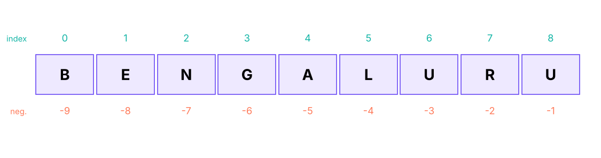

Operators, Strings, Indexing, Slicing & String Methods
Master Python's operators (arithmetic, comparison, logical, assignment, membership, identity, bitwise) and work with text: string indexing and slicing, immutability, every string method an analyst needs (split, join, strip, replace, find, startswith, case methods, isdigit…), escape sequences, and cleaning real messy text.
- Use arithmetic, comparison, logical, membership and identity operators and explain operator precedence
- Index and slice strings forwards and backwards, including steps, and explain immutability
- Apply string methods to clean, split, search, join and format text
- Build small text-cleaning functions and check results on real data
- Recognise common string pitfalls (encoding, whitespace, case, escape characters)
Operators
Arithmetic
| Operator | Meaning | Example | Result |
|---|---|---|---|
+ - * |
Add, subtract, multiply | 7 * 3 |
21 |
/ |
True division (always float) | 7 / 2 |
3.5 |
// |
Floor division | 7 // 2, -7 // 2 |
3, −4 |
% |
Remainder (modulo) | 7 % 2, -7 % 3 |
1, 2 |
** |
Power | 2 ** 10 |
1024 |
print(7 / 2, 7 // 2, -7 // 2, 7 % 2, -7 % 3, 2 ** 10, 9 ** 0.5)
print(divmod(17, 5)) # (quotient, remainder) in one call
hours = 135; print(f"{hours // 60} h {hours % 60} min") # split minutes into hours and minutes
print(10 % 3 == 1, 12 % 2 == 0) # test odd/even and divisibility3.5 3 -4 1 2 1024 3.0 (3, 2) 2 h 15 min True True
Comparison and logical
x = 15
print(x > 10, x == 15, x != 15, 10 < x <= 20) # chained comparison: 10 < x and x <= 20
print(x > 10 and x < 20, x < 5 or x > 12, not x > 10)
print("apple" < "banana", "Zebra" < "apple") # strings compare by character codes: uppercase before lowercaseTrue True False True True True False True True
Short-circuit evaluation: A and B stops at A if A is falsy; A or B stops at A if A is truthy. They return the deciding operand, not just True/False:
print(0 or "default", "" or "n/a", "x" and "y", None and 1)
name = ""; print(name or "Anonymous") # a common idiom for default values
print(5 > 3 and print("evaluated") is None) # right side runs only when neededdefault n/a y None Anonymous evaluated True
Assignment, membership, identity
count = 10; count += 5; count *= 2; count -= 1; count //= 4; count **= 2
print(count)
print(3 in [1, 2, 3], "py" in "python", "z" not in "python", "a" in {"a": 1}) # membership
a = [1, 2]; b = [1, 2]; c = a
print(a == b, a is b, a is c, None is None) # equality vs identity49 True True True True True False True True
Bitwise (awareness)
& AND, | OR, ^ XOR, ~ NOT, << >> shifts: used for flags and low-level work; in pandas/NumPy & and | combine boolean arrays (use brackets).
print(5 & 3, 5 | 3, 5 ^ 3, 5 << 1, 5 >> 1, bin(5))1 7 6 10 2 0b101
Precedence
From highest to lowest: ** → unary -x → * / // % → + - → comparisons (< == in is) → not → and → or. When in doubt, use brackets.
print(2 + 3 * 4 ** 2, (2 + 3) * 4 ** 2, -2 ** 2, (-2) ** 2, not 1 == 2 or False)50 80 -4 4 True
Walrus operator (3.8+)
:= assigns inside an expression: if (n := len(items)) > 10: print(f"{n} items"). Useful in loops and comprehensions; do not overuse.
Strings
A string is an immutable sequence of Unicode characters. Create with single, double or triple quotes.
city = "Bengaluru"
quote = 'She said "hello"'
multi = """Line 1
Line 2"""
hindi = "नमस्ते" # Unicode works everywhere
print(len(city), len(hindi), multi.splitlines(), city.upper())
print("Ha" * 3, "data" + " " + "science", "-" * 20)9 6 ['Line 1', 'Line 2'] BENGALURU HaHaHa data science --------------------
Indexing
Characters are numbered from 0 on the left and from −1 on the right.

w = "BENGALURU"
print(w[0], w[3], w[-1], w[-3])
try: print(w[20])
except IndexError as e: print("IndexError:", e)B G U U IndexError: string index out of range
Slicing: s[start:stop:step]
start is included, stop is excluded; omit a part to mean "from the beginning / to the end"; a negative step goes backwards.
w = "BENGALURU"
print(w[0:3], w[:3], w[3:], w[3:6], w[-4:], w[:-1])
print(w[::2], w[::-1], w[1::3], w[8:2:-2])
print(w[2:100], repr(w[5:2])) # out-of-range slices are safe; an empty slice is ''BEN BEN GALURU GAL LURU BENGALUR BNAUU URULAGNEB EAR UUA NGALURU ''
| Slice | Meaning |
|---|---|
s[:n] |
First n characters |
s[-n:] |
Last n characters |
s[a:b] |
From a up to (not including) b; length b − a |
s[::-1] |
Reversed |
s[::2] |
Every second character |
order_id = "IN-2025-00042"
country, year, number = order_id[:2], int(order_id[3:7]), int(order_id[-5:])
print(country, year, number) # same as LEFT/MID/RIGHT in Excel and SQLIN 2025 42
String methods
Strings are immutable, so every method returns a new string; the original stays unchanged.
Case and cleaning
s = " new DELHI "
print(repr(s.strip()), repr(s.lstrip()), repr(s.rstrip()))
print(s.strip().lower(), s.strip().upper(), s.strip().title(), s.strip().capitalize(), s.strip().swapcase())
print("xxHixx".strip("x"), "2025-04-27".replace("-", "/"), "a,b,,c".replace(",,", ","))
print("Bengaluru".casefold() == "BENGALURU".casefold()) # robust case-insensitive comparison'new DELHI' 'new DELHI ' ' new DELHI' new delhi NEW DELHI New Delhi New delhi NEW delhi Hi 2025/04/27 a,b,c True
Searching and testing
t = "Delhi, Mumbai, Delhi, Pune"
print(t.find("Delhi"), t.rfind("Delhi"), t.find("Goa"), t.count("Delhi"), t.index("Mumbai"))
print(t.startswith("Delhi"), t.endswith("Pune"), "Mumbai" in t)
print("12345".isdigit(), "12.5".isdigit(), "abc".isalpha(), "abc123".isalnum(), " ".isspace(), "Abc".istitle(), "abc".islower())0 15 -1 2 7 True True True True False True True True True True
find returns −1 when not found; index raises ValueError. isdigit is False for decimals and negatives, so use try: float(s) to test numbers.
Splitting and joining
csv_line = "E101,Kavya Iyer,HR,97000"
parts = csv_line.split(",")
print(parts, len(parts))
print("one two three".split(), "a-b-c".split("-", 1), "line1\nline2".splitlines(), "path/to/file.csv".rsplit("/", 1))
print(", ".join(["Pune", "Delhi", "Goa"]), "".join(["a", "b"]), " | ".join(str(n) for n in [1, 2, 3]))
print("abc".partition("b"), "IN-2025-00042".partition("-"))['E101', 'Kavya Iyer', 'HR', '97000'] 4
['one', 'two', 'three'] ['a', 'b-c'] ['line1', 'line2'] ['path/to', 'file.csv']
Pune, Delhi, Goa ab 1 | 2 | 3
('a', 'b', 'c') ('IN', '-', '2025-00042')split() with no argument splits on any whitespace and ignores repeats: the best way to tokenise text. join is called on the separator, with a list of strings.
Alignment, padding and formatting
print("42".zfill(6), "7".rjust(4, "0"), "ab".ljust(5, ".") + "|", "ab".center(8, "*"))
print("Total".ljust(10) + "1,500".rjust(10))
print("{:>8} {:<8} {:^8}".format("right", "left", "mid"))
print("tab\tseparated", "new\\nline stays literal", "unicode: \u20b9 \u2713")000042 0007 ab...| ***ab*** Total 1,500 right left mid tab separated new\nline stays literal unicode: ₹ ✓
Translating and encoding
table = str.maketrans({"₹": "Rs ", ",": ""})
print("₹1,25,000".translate(table))
print("naïve café".encode("utf-8"), "abc".encode("ascii"), b"abc".decode())
print(ord("A"), chr(97), "é".encode("utf-8"), len("é".encode("utf-8")))Rs 125000 b'na\xc3\xafve caf\xc3\xa9' b'abc' abc 65 a b'\xc3\xa9' 2
Text on disk is bytes. Most files today are UTF-8; if you see é or �, the file was read with the wrong encoding. In pandas use pd.read_csv(path, encoding="utf-8") or "latin-1"/"cp1252" for old Windows exports.
Method cheat sheet
| Goal | Methods |
|---|---|
| Change case | lower(), upper(), title(), capitalize(), casefold() |
| Trim | strip(), lstrip(), rstrip(), removeprefix(), removesuffix() |
| Replace | replace(old, new, count), translate() |
| Search | find(), rfind(), index(), count(), in, startswith(), endswith() |
| Test | isdigit(), isalpha(), isalnum(), isspace(), isupper(), islower() |
| Split / join | split(), rsplit(), splitlines(), partition(), join() |
| Pad / align | zfill(), ljust(), rjust(), center() |
| Format | f-strings, format(), format_map() |
Cleaning real text
Customer names from the course's customers.csv, cleaned with the same rules you used in Excel (TRIM, PROPER) and SQL:
import pandas as pd
cust = pd.read_csv("customers.csv")
raw = [" asha RAO ", "ravi verma", "MEERA\tIYER", "kabir singh "] # messy examples
def clean_name(name):
parts = name.split() # split() collapses all whitespace
return " ".join(p.capitalize() for p in parts)
print([clean_name(n) for n in raw])
print(cust.customer_name.head(5).tolist())
first_names = [n.split()[0] for n in cust.customer_name]
print(len(first_names), "names; most common first names:", pd.Series(first_names).value_counts().head(5).to_dict())['Asha Rao', 'Ravi Verma', 'Meera Iyer', 'Kabir Singh']
['Saanvi Khan', 'Meera Bose', 'Riya Shah', 'Diya Fernandes', 'Neha Sharma']
800 names; most common first names: {'Arjun': 36, 'Vikram': 31, 'Aarav': 31, 'Sneha': 30, 'Priya': 30}def initials(name): return "".join(w[0].upper() for w in name.split())
def mask_email(email):
user, _, domain = email.partition("@")
return user[0] + "*" * (len(user) - 2) + user[-1] + "@" + domain
print(initials("kavya iyer"), mask_email("kavya.iyer@abc.in"))
print("palindrome" if (s := "Level").lower() == s.lower()[::-1] else "not")KI k********r@abc.in palindrome
Counting characters and words
text = "data science is fun and data engineering is fun too"
words = text.split()
freq = {}
for w in words: freq[w] = freq.get(w, 0) + 1
print(freq)
print(max(freq, key=freq.get), len(words), len(set(words))){'data': 2, 'science': 1, 'is': 2, 'fun': 2, 'and': 1, 'engineering': 1, 'too': 1}
data 10 7(collections.Counter(words) does this in one line: Lesson 8.)
Common pitfalls
| Pitfall | Example | Fix |
|---|---|---|
| Forgetting strings are immutable | s.upper() without assigning |
s = s.upper() |
| Whitespace/case mismatches | "Delhi " != "Delhi" |
strip(), lower() before comparing |
Using + with numbers |
"Total: " + 5 |
f-string or str(5) |
isdigit for decimals |
"3.5".isdigit() → False |
try: float(x) |
| Off-by-one in slices | s[0:3] has 3 characters |
stop is excluded |
| Backslashes in Windows paths | "C:\new" → newline! |
raw string r"C:\new" or forward slashes |
| Huge strings in loops | s += x in a loop |
build a list and "".join(list) |
| Wrong encoding | é characters |
encoding="utf-8" |
Ask an assistant to produce 10 messy phone numbers (fake) and then write a function to standardise them to +91-XXXXX-XXXXX. Test it yourself on edge cases (spaces, dashes, leading 0, +91 already present) and compare approaches: string methods first, then regular expressions (Lesson 14).
Summary
- Operators:
/true division,//floor division,%remainder,**power; comparisons chain (10 < x <= 20);and/orshort-circuit and return an operand; usein,not in,is. - Strings are immutable sequences: index from 0 or −1, slice
[start:stop:step](stop excluded). - Methods return new strings:
strip,lower/upper/title,replace,split/join,find/count,startswith,zfill,partition. - Clean text by trimming, normalising case/whitespace and replacing variants before comparing or counting.
- Watch pitfalls: forgetting to assign, off-by-one slices, wrong encodings, Windows backslashes.
1. What does "BENGALURU"[2:5] return?
2. What is -7 // 2 in Python?
3. What does 0 or "default" return?
or returns the first truthy operand (or the last operand).4. Which statement is true about strings?
5. How do you split text on any whitespace and ignore repeated spaces?
split() without an argument splits on runs of whitespace.6. "3.5".isdigit() returns:
(1) From "IN-2025-00042" extract the country, year (int) and sequence number (int) with slicing. (2) Write is_valid_pin(text) that returns True for six-digit PIN codes not starting with 0. (3) Reverse the words in "data science is fun" (word order, not letters). (4) Turn " rAHul VERMA " into "Rahul Verma".
Show solution
oid = "IN-2025-00042"; print(oid[:2], int(oid[3:7]), int(oid[-5:]))
def is_valid_pin(t): return len(t) == 6 and t.isdigit() and t[0] != "0"
print(is_valid_pin("411001"), is_valid_pin("041100"), is_valid_pin("4110a1"))
print(" ".join("data science is fun".split()[::-1])) # fun is science data
print(" ".join(w.capitalize() for w in " rAHul VERMA ".split()))Q: How do you reverse a string in Python?
s[::-1] (slice with step −1) or "".join(reversed(s)).
Q: Why use "".join(list) instead of += in a loop?
Strings are immutable; each += creates a new string (quadratic time). Building a list and joining once is linear.
Q: Difference between find and index?
find returns −1 if the substring is missing; index raises ValueError.
Q: What does // do with negative numbers?
Floors toward minus infinity: -7 // 2 = -4, and -7 % 3 = 2, so (a // b) * b + a % b == a always holds.
Practise more online
Free, trusted places to test yourself on this topic. Links open the original site in a new tab.